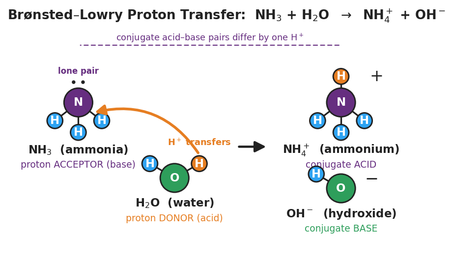

01 Phenomenon
Your teacher shows a bottle of household ammonia cleaner. It is a base: it turns red litmus blue and reads about pH 11. But here is its formula: NH₃. There is no OH⁻ anywhere in it. The Arrhenius rule you learned in Lesson 01 said a base produces OH⁻ in water — yet ammonia clearly behaves like a base with no hydroxide of its own.
02 Driving question
How can ammonia (NH₃) be a base when it doesn't contain OH⁻?
03 Notice & wonder
| I notice… | I wonder… |
|---|---|
Turn & Talk #1: In the reaction NH₃ + H₂O → NH₄⁺ + OH⁻, one particle gave away an H⁺ and one particle took an H⁺. Look at the figure your teacher is projecting and trace the orange proton. Which particle gave the H⁺, and which took it?
04 Initial model
Study the reaction NH₃ + H₂O → NH₄⁺ + OH⁻. Before your teacher names anything, answer in your own words.
- Which particle gave away an H⁺, and what did it become?
- Which particle took the H⁺, and what did it become?
- The solution contains OH⁻ (that is why litmus turns blue). Where did that OH⁻ actually come from — the ammonia or the water? Explain.
05 Investigate
Part 1 — ABCs: Track the proton (no vocabulary yet)
For each equation, count the hydrogens on each species before and after the arrow. Write which species lost an H⁺ (left → right) and which gained an H⁺.
| # | Equation | Lost an H⁺ (became…) | Gained an H⁺ (became…) |
|---|---|---|---|
| 1 | HCl + H₂O → Cl⁻ + H₃O⁺ | ||
| 2 | NH₃ + H₂O → NH₄⁺ + OH⁻ | ||
| 3 | CH₃COOH + H₂O → CH₃COO⁻ + H₃O⁺ |
Look closely: In which equation did water gain an H⁺? In which equation did water lose an H⁺?
Part 2 — The figure: where does the OH⁻ come from?
Look at figures/proton_transfer_nh3.png:

In the figure, the OH⁻ is drawn on the right side. Which reactant did it come from? _______________
Did the ammonia (NH₃) ever contain OH⁻? _______________
Explain in one sentence how a substance with no OH⁻ can still make a solution basic.
Part 3 — Sort the partner pairs
A “partner pair” is two formulas that are identical except one has exactly one more H⁺ (and one more positive charge). For each equation, find the two partner pairs.
Equation 1: HCl + H₂O → Cl⁻ + H₃O⁺
| Partner pair | Has more H⁺ | Has fewer H⁺ |
|---|---|---|
| Pair A | ||
| Pair B |
Equation 2: NH₃ + H₂O → NH₄⁺ + OH⁻
| Partner pair | Has more H⁺ | Has fewer H⁺ |
|---|---|---|
| Pair A | ||
| Pair B |
Equation 3: CH₃COOH + H₂O → CH₃COO⁻ + H₃O⁺
| Partner pair | Has more H⁺ | Has fewer H⁺ |
|---|---|---|
| Pair A | ||
| Pair B |
06 Make it make sense
For each reaction, (i) name the proton donor (acid) and proton acceptor (base) on the reactant side, and (ii) write the two conjugate (partner) pairs. These are the same equations you analyzed in the Investigation — confirm your work here.
1. HCl + H₂O → Cl⁻ + H₃O⁺
- Proton donor (acid): _______________ Proton acceptor (base): _______________
- Conjugate pair A: ______ / ______ Conjugate pair B: ______ / ______
2. NH₃ + H₂O → NH₄⁺ + OH⁻
- Proton donor (acid): _______________ Proton acceptor (base): _______________
- Conjugate pair A: ______ / ______ Conjugate pair B: ______ / ______
3. CH₃COOH + H₂O → CH₃COO⁻ + H₃O⁺
- Proton donor (acid): _______________ Proton acceptor (base): _______________
- Conjugate pair A: ______ / ______ Conjugate pair B: ______ / ______
07 Key vocabulary
- Brønsted-Lowry acid (proton donor)
- a substance that donates (gives away) a hydrogen ion, H⁺, in a reaction; e.g., HCl donates a proton to water, and in the ammonia reaction water itself is the proton donor
- Brønsted-Lowry base (proton acceptor)
- a substance that accepts (takes) a hydrogen ion, H⁺, in a reaction; e.g., NH₃ accepts a proton from water and becomes NH₄⁺, which is why ammonia is basic even though it contains no OH⁻
- conjugate acid-base pair
- two species that differ by exactly one H⁺ (and one unit of charge); the conjugate acid has one more H⁺ than the conjugate base. Examples: NH₄⁺/NH₃ and H₂O/OH⁻
Use each term in a sentence about today’s investigation. Do not copy the definition — describe something you actually did or observed.
Brønsted-Lowry acid (proton donor): _______________________________________________ _______________________________________________
Brønsted-Lowry base (proton acceptor): _______________________________________________ _______________________________________________
conjugate acid-base pair: _______________________________________________ _______________________________________________
08 Revise your model
Return to your Initial Model (the NH₃ + H₂O reaction). Add vocabulary labels:
Label the proton donor (acid) and the proton acceptor (base) in the reaction.
Draw a bracket around each of the two conjugate acid-base pairs and write “differs by one H⁺” under each.
Circle the OH⁻ in the products and draw an arrow back to the species it came from.
Then finish this Because / But / So sentence:
Ammonia (NH₃) acts as a base in water even though it contains no OH⁻ because __________________________________________, but __________________________________________, so __________________________________________.
09 Exit ticket
Consider the reaction: HF + H₂O → F⁻ + H₃O⁺
(a) Identify the Brønsted-Lowry acid (proton donor) and the Brønsted-Lowry base (proton acceptor) on the reactant side.
Proton donor (acid): _______________ Proton acceptor (base): _______________
(b) Identify the two conjugate acid-base pairs in this reaction.
Conjugate pair A: ______ / ______ Conjugate pair B: ______ / ______
(c) In one sentence, explain why this reaction is described as a proton transfer rather than the production of OH⁻.
10 Explore further
- Conjugate-pair identification practice (ACTIVE LEARNING anchor): Working in pairs, students receive a set of acid-base equations (printed cards or the worksheet table) and, *before any vocabulary is given*, sort each equation by tracking the H⁺: which species *lost* an H⁺ going left-to-right (the donor), and which species *gained* one (the acceptor)? Students physically annotate each equation, then group the species into "differs by one H" pairs. This proton-tracking activity is the Explore-before-Explain investigation; the formal terms (donor, acceptor, conjugate pair) are named only afterward in Phase 3. Connect every example back to the `figures/proton_transfer_nh3.png` particle diagram.
- Arrhenius vs. Brønsted-Lowry model comparison: Using a short list of species (HCl, NaOH, NH₃, CH₃COOH, HCO₃⁻), students fill a two-column table — "Can Arrhenius explain it?" and "Can Brønsted-Lowry explain it?" — and identify the one case (NH₃) where only Brønsted-Lowry succeeds. This is the model-revision evidence for the Systems & System Models CCC.
- For a digital option, a Javalab "acid–base" proton-transfer animation or a PhET acid-base solutions module can preview the NH₃ + H₂O → NH₄⁺ + OH⁻ reaction before the hands-on sort; no external URL is required for the core lesson.